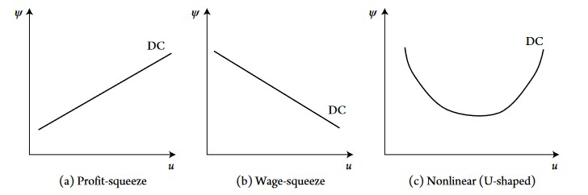
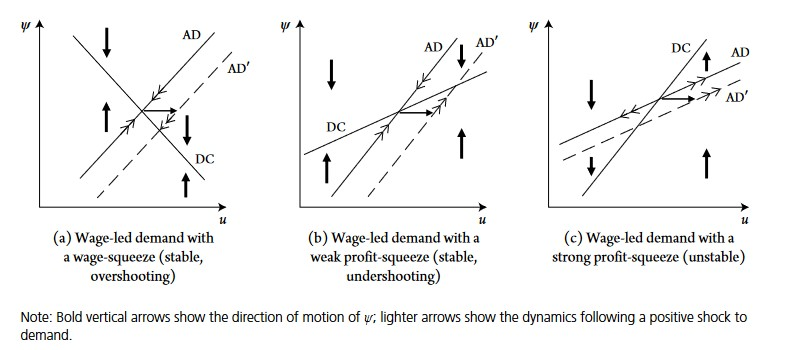
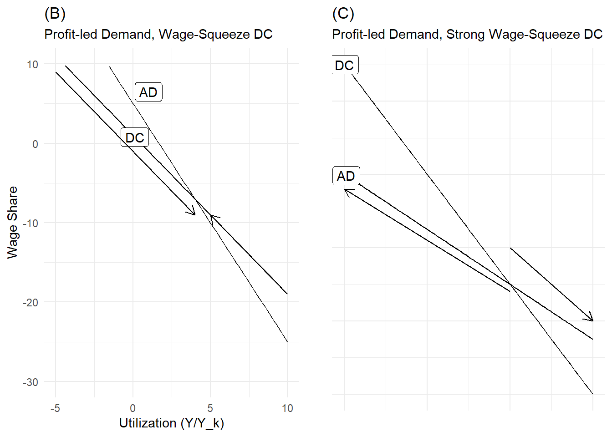
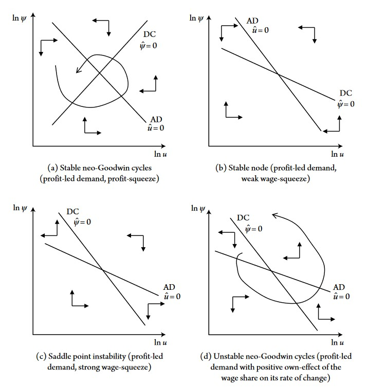

9 Distributional Conflict, Aggregate Demand, Neo-Goodwin Cycles
9.1 Preliminary Notes
9.1.1 Importance and Motivations for Distributional Conflict Models
Neo-Keynesian and neo-Kaleckian seen in the previous chapters are key models within heterodox macroeconomics. However, all these models consider important variables as exogenous. Neo-Keynesian models typically assume a given nominal wage and the neo-Kaleckian models generally assume an exogenous markup rate (except open-economy models).
A major drawback of these two types of models is that they do not explicitly give an explanation of inflation arising from distributional conflict. The only exception is the Marglin’s synthesis we saw in the Neo-Keynesian models part.
Developing models which include class conflict between workers and capitalists over the distribution of national income is crucial for heterodox economics, because one characteristic common to all heterodox schools (Marxian, Kalecian, Keynesian…) is that they all recognized that capitalists economies are marked by class conflict.
We will see that the outcome of distributive conflict models is the derivation of the distributive curve (DC), which is an important result of post-Keynesian/heterodox macroeconomics. In simple terms, the DC describes the relationship and dynamics between aggregate demand (measure through capacity rate \(u\)) and inequality (measured through wage share \(\psi\)). If the DC is positive, higher aggregate demand and growth lead to higher wage share because increase in the former redistributes income to wages (thus a positive DC implies that workers have strong bargaining power). Conversely, a negative DC means that as output and aggregate demand increase, the wage share decreases. We will see that a positive DC is called profit-squeeze and a negative DC wage-squeeze.
9.2 Basic Distributional Conflict Model
A very simple distributional model assumes that capitalists and workers both fight to achieve given objectives. On the one hand, workers want to reach and negotiate a target real wage \(w_w\), while they get their actual real wage \(w\). On the other hand, firms want to reach a given target markup rate \(\tau_f\), which corresponds to an implicit target real wage for firms \(w_f\). But let’s first see how nominal wage changes according to change in target real wage for workers.
9.2.1 Change in Nominal Wage \(\hat{W}\)
When the discrepancy between target real wage and the actual real wage \(w_w-w\) is high, workers are willing negotiate higher nominal wage wage to reduce this difference.
The degree to which workers will be able to rise their nominal wage depends on many institutional factors such as the strength of labor unions, labor market regulations, unemployment rate and social norms. All these factors will affect the target real wage \(w_w\), while the degree to which the discrepancy will pass through higher nominal wage depends on a coefficient, \(\phi\), which can be interpreted as the speed of adjustment of nominal wage:
\[\hat{W}=\phi(w_w-w)\]
9.2.2 Change in Price \(\hat{P}\)
On the price side, change in price will be a positive function of the difference between actual real wage and target real wage for firms \(w-w_f\). The higher this difference, the more firms will raise their depending on the price adjustment speed factor \(\theta\), which depends on the monopoly power of the firms and antitrust regulation:
\[\hat{P}=\theta(w-w_f)\]
9.3 The Distributive Curve (DC)
Some further steps are required to derive the distributive curve from the model above.
9.3.2 Modeling productivity as a Function of \(u, \psi, y\)
The final step to complete the model and derive the DC curve is to model labor productivity growth \(q = \hat{Y}-\hat{L}\) as function of capacity rate \(u=Y/Y_k\).
However, \(q\) also depends on other variables such as the wage share or output growth, here is a summary of the variables affecting labor productivity growth:
Capacity utilization \(u\) (+):
In the short run, labor productivity growth is positively associated with output and utilization because of overhead labor. Overhead labor refers to managers, engineers and all the workers who are not easily fired during a recession. Thus, in a short run recession (when output and \(u\) fall), \(L\) does not fall enough and thus \(Y\) falls more than \(L\), making the labor productivity ratio fall \(Q = \frac{Y}{L}\). Conversely, during short run expansion (rise of output and utilization), labor productivity increases because hiring is less than proportional to output increase (\(Y\) increase more than \(L\)).
Wage Share \(\psi\) (+):
A higher wage share can induce firms to invest more in labor-saving equipment. The reason is that by investing in labor-saving equipment, firms can decrease workers’ bargaining power. Hence, when labor costs are high, labor productivity is expected to rise.
Output Growth \(y\) (+)
Verdoorn and Kaldor showed that growth of output and labor productivity are positively associated and even positively influence each other. Labor productivity growth increases output growth, because more \(Y\) is produced for the same quantity of labor, but this rise in output growth will in return also have a positive impact on \(q\).
To sum up, labor productivity growth can be written as a linear function of \(u\) and \(\psi\):
\[q=q_0+q_1u+q_2\psi\]
9.3.3 Equilibrium and Distributional Conflict curve
We have thus the following wage and price inflation functions:
\[\hat{W} = \phi(\lambda_0+\lambda_1{u}-\psi)+\beta{(q_0+q_1u+q_2\psi)} + \alpha{\hat{P}}\]
\[\hat{P}=\theta(\psi-1+\eta_0+\eta_1u))-\gamma{(q_0+q_1u+q_2\psi)}\]
To derive the DC, we equate \(\hat{P}=\hat{W}\) and solve for the equilibrium wage share \(\psi\), which gives:
\[\psi=\frac{\phi\lambda_0+\theta(1-\alpha)(1-\eta_0)-q_0+u[\phi\lambda_1-\theta\eta_1(1-\alpha)-q_1]}{\phi+\theta(1-\alpha)+q_2}\]
This equation seems complicated, with a lot of different variables. However, it is only the sign of
\[u[\phi\lambda_1-\theta\eta_1(1-\alpha)-q_1]\]
which truly is of interest here, because it will determine whether the utilization \(u\) will have a positive impact of the wage share or not.
Remember that:
\(\phi\) is the speed of adjustment of nominal wages when workers bargain for higher wage share.
\(\lambda_1\) is the positive marginal impact of \(u\) on target wage share \(\psi_w\) for workers.
- Hence, the product \(\phi\lambda_1\) can be interpreted as a set of institutional factors which reinforce workers’ bargaining power. \(\phi\lambda_1\) reflects the bargaining power of workers.
But this product is subtracted by:
\(\theta\eta_1\), which is the degree to which firms raise price during a short term recession (\(\eta_1\)) multiplied by the speed of adjustment of price to target wage share for firms. This product is also multiplied by the inverse of the degree of indexation (of nominal wage to inflation). The higher are nominal wages indexed to inflation, the more likely the final sign of the bracket will be positive.
- Hence, \(\theta\eta_1\) reflects the monopoly power of firms
\(q_1\), which is the marginal impact of utilization on labor productivity growth. The higher is \(q_1\), the more a rise in utilization makes labor productivity increase and since the latter has a negative impact on the wage share, the higher is \(q_1\), the more likely a rise in \(u\) will have a negative impact on the wage share.
To sum up, the DC can be either positive or negative depending on the final sign of the bracket above. The more is the institutional framework favorable to workers (wage indexation, strength of labor union, labor market legislation…), the more likely is the DC to be positive (and conversely).

As explained in the introduction, there are two types of DC (we ignore the third type shown in the illustration above):
Profit-squeeze DC:
When the impact of higher utilization and employment of wage increase is superior than the effect on price and productivity growth, an increase in utilization will increase the wage share. This positive relationship between wage share and utilization is called “profit-squeeze” because an increase in output and \(u\) make redistribute income to wages and thus decreases the profit share.
Wage-squeeze DC:
When the impact of higher utilization, output and employment on productivity growth and price increase is superior to the rise in wages, the DC is called “wage-squeeze” because there is a negative relationship (impact) of output and utilization on the wage share. The more output and utilization increase, the more is total income more favorably redistributed to profits and thus the wage share decline and the profit share increase.
9.4 Combining Distributional Curve and Demand Regimes
In the last chapter on neo-Kaleckian model, we saw that the demand regime (how utilization and output are related to the wage share and profit share) could be either:
Profit-led
When an increase in the wage share has a negative impact on utilization and output, because aggregate demand is driven mainly by investment and/or exports.
Wage-led
When an increase in the wage share has a positive impact on utilization and output, because aggregate demand is mainly driven by private domestic consumption.
We now saw that an economy is not only characterized by either wage-led or profit-led demand, but that is has also either a wage-squeeze or profit-squeeze DC. There are thus many combinations possible: an economy can have a profit-led demand with a wage-squeeze DC, a wage-led demand and a wage-squeeze DC and so on.
However, how these combinations can be interpreted depends on some assumptions. There are two possible assumptions:
Demand and output (utilization) adjust more rapidly than distribution (nominal wages and prices).
Demand and output, and prices, wages and distribution have the same adjustment speed.
9.4.1 1. Demand adjusts more rapidly
9.4.1.1 Wage-led demand
In that case, the economy is always on the AD curve in the short run and the DC curve only puts pressure on the wage share and utilization at the medium and long run. At any point below the DC curve, there is an upward pressure on the wage share and a downwards pressure at any point above it.

The illustration above shows the possible scenarios in the case of a wage-led demand regime (upward slopping AD curve).
But what does it actually mean to have, for instance, a wage-led demand regime with a wage-squeeze distributive curve (graph a)? Wage-led demand regime means that, as the wage share increase, utilization and output rise as well. But since distribution is wage-squeeze, as output and utilization increase distributional dynamics which are unfavorable to workers and their wage share will decrease the wage share and increase the profit share. Therefore, at low level of utilization (any point on the left on the graph, at low \(u\)), the wage share is also relatively low. Subsequently, output, utilization and the wage share will gradually increase (because either increase in wage share or utilization will have a positive feedback) on each other until the AD curve crosses the DC curve.
If the DC and demand curves are positive, we have both wage-led demand and profit-squeeze distribution. If the DC curve has a slower slope than AD curve, we are in scenario (b), if it is higher, it corresponds to scenario (c). Having wage-led demand and profit-squeeze distribution means that higher wage share will have a positive impact on utilization which, in return, will redistribute even more of total income to the wage share, which in return will increase utilization even further and so on. The difference between scenario b and c is that in c the slope of the DC curve is higher, meaning that the effect of \(u\) on distribution is very favorable to workers and their wage share. In that case, it is possible that the positive interaction between increasing \(u\) and the wage share never stops (this is why there are arrows pointing away from equilibrium in graph c).
9.4.1.2 Profit-led demand
How do the three scenarios above change is demand is profit-led? When demand is profit-led, the AD curve becomes negative: the higher the wage share, the lower the capacity rate.
As with wage-led, there are three possible scenarios:
- (A): In the case of profit-led demand with profit-squeeze distribution, the situation is stable. When the wage share is high, utilization and output will be low (since demand is profit-led, high wage share depress demand and thus output). At this low level of utilization and high level of wage share, distribution is not in favor of workers (low output implies low employment and thus low bargaining power): nominal wages will slowly decrease, this decrease will in return have a positive impact on utilization and will continue until utilization rises enough so that workers have regain enough bargaining power to stop the fall in their nominal wage. If utilization is initially very high, workers have a lot of bargaining power to bargain a high share of national income. However, a high wage share has a negative impact on utilization (firms would not want to invest a this level) and demand will be depressed: utilization, demand, output and employment fall until the wage share falls enough so that demand stabilizes at equilibrium
If distribution is wage-squeeze, there are two scenario depending on whether the wage-squeeze DC is strong or not:

- The situation in which demand is profit-led and distribution weakly wage-squeeze leads to a stable equilibrium. If utilization is low, the wage share is high, but workers would not be able to keep such a high share of national income, because any increase in utilization, demand and output will redistribute more share to profits, which will stimulate demand further and so on. The wage share gradually decreases, which stimulate investment, increase utilization, output and employment until workers can stop the decrease in their wage share. If we start at high level of utilization, the wage share is low but distribution is favorable for workers. The latter can negotiate higher wages and capture higher share of national income until capacity decreases enough so that workers loose this bargaining advantage and stop capturing higher share at equilibrium.
- In the case of a strong wage-squeeze, the situation is unstable and wage share and output can move perpetually away from equilibrium. For low level of utilization, the wage share is high. As output and demand decreases because of high wage share, workers are able to capture even more share of national income, which depresses demand even further, redistributes even more income to the wage share and so on. Conversely, strong demand dynamics lead to lower wage share, which stimulate demand and growth even further, redistribute income even more to profit share and so on.
9.4.2 2. Demand and Distribution (nominal wage and price) have similar adjustment speed
What happens when demand and distribution adjust with similar speed? After specifying the change of aggregate demand \(\hat{u}\) and distribution \(\hat{\psi}\), we will see that the model implies can, under some specific conditions, describe business cycles dynamics.
9.4.2.2 Dynamic Aggregate Demand Curve
Change in aggregate demand can be describe as:
\[\hat{u}=\hat{Y}-\hat{Y}_K\]
With:
\[\hat{Y}=d_0+d_1u+d_2\psi\] And
\[\hat{Y}_K=b_0+b_1u+b_2\psi\]
\(d_0\) represents autonomous and exogenous determinants of aggregate demand (government expenditures, exports, business and consumer confidence…)., \(d_1\) is assumed to be negative and \(d_2\) will determine whether demand is profit-led (if negative) or wage-led (if positive).
\(b_1\) (effect of u on investment) is assumed positive, \(b_2\) can be assumed either negative or positive.
In log form, the equation is:
\[\hat{u}=v_0+v_1ln(u)+v_2ln(\psi)\]
With \(v_i=d_i-b_i, i = (1,2,3)\).
We have thus two simultaneous equations:
\[\hat{u}=v_0+v_1ln(u)+v_2ln(\psi)\]
\[\hat{\psi}=\omega_0+\omega_1ln(u)+\omega_2ln(\psi)\]
If we set \(\hat{u}=0\) and \(\hat{psi}=0\), we get the nullcline curves, and then rewrite the two equations to get the wage share as a function of utilization:
\[ln(\psi)=-\frac{v_0}{v_2}-\frac{v_1}{v_2}ln(u)\]
\[ln(\psi)=-\frac{\omega_0}{\omega_2}-\frac{\omega_1}{\omega_2}ln(u)\]
\(v_1\) is assumed negative, so that the AD curve will be positive if \(v_2>0\) (wage led demand) and negative if \(v_2<0\) (profit led demand).
Since \(\omega_2\) is also assumed to be negative, distribution curve will be wage squeeze if \(\omega_1<0\) and profit squeeze if \(\omega_1>0\).
Depending on the signs of \(v_2\) and \(\omega_1\), we can get many possible combinations and results, Blecker and Setterfield present the following cases in the case of profit led demand:

If demand if profit led and distribution is profit squeeze, we are in the case of stable “neo-Goodwin” business cycles. The more the economy grows (moving gradually on the right on the u axis), the more the wage share increases, the more the wage share will increase (growth redistributes bargaining power and income to workers). However, increasing wage share will gradually depress demand because declining profit share will eventually depress investment demand and growth. The decline in growth and demand will in return decrease the wage share until the latter decreases enough so that firms begin to invest again, which will increase demand, output and wage share. The increase in wage share will gradually depress demand through, again, decline in investment and so on… This cycle is “stable” because as cycles unfold, we get closer to equilibrium. Conversely, the graph down on the right shows unstable neo-Goodwin cycles (when \(\omega_2>0\), meaning that when the wage share increase, workers seek to bargain even higher wage share).